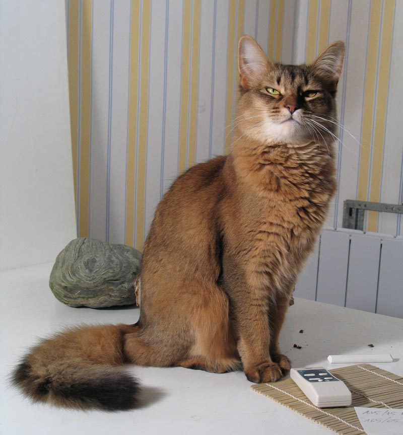

The first Somali cats appeared in the litters of Abyssinians as long-haired kittens. In the 1940s a British breeder named Janet Robertson exported some Abyssinian kittens to Australia, New Zealand and North America. Descendants of these cats occasionally produced kittens with long or fuzzy coats. In 1963, Mary Mailing, a breeder from Canada, entered one into a local pet show. Ken McGill, the show's judge, asked for one for breeding purposes.
An American Abyssinian breeder Evelyn Mague, also received longhairs from her cats, which she named "Somalis". Don Richings, another Canadian breeder, used kittens from McGill, and began to work with Mague. The first Somali recognized as such by a fancier organization was Mayling Tutsuta, one of McGill's cats. As of the late 1970s, the Somali was fully accepted in North America. The new breed was accepted in Europe in the 1980s. By 1991, the breed was broadly (though not universally) accepted internationally.[1]
References:
This article uses material from the Wikipedia article ”Somali cat", which is released under the Creative Commons Attribution-Share-Alike License 3.0.
1. Fogle, Bruce (2001) [1997]. The Encyclopedia of the Cat: The Definitive Visual Guide. Dorling Kindersly Pr. p. 224. ISBN 978-1-4053-3490-7.
Picture: By Bonsai-ka at fr.wikipedia [CC BY-SA 1.0], from Wikimedia Commons
{kind=link}